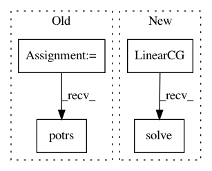

20c65469fe1e090f4d51322178655c7253b85e93,gpytorch/math/functions/invmm.py,Invmm,forward,#Invmm#Any#Any#,10
Before Change
Returns input_1^{-1} input_2
def forward(self, chol_matrix, input_2):
res = input_2.potrs(chol_matrix)
self.save_for_backward(chol_matrix, input_2, res)
return res
def backward(self, grad_output):
After Change
// Returns input_1^{-1} input_2
class Invmm(Function):
def forward(self, matrix, input_2):
res = LinearCG().solve(matrix, input_2)
if res.ndimension() == 1:
res.unsqueeze_(1)
self.save_for_backward(matrix, input_2, res)
return res
In pattern: SUPERPATTERN
Frequency: 3
Non-data size: 4
Instances
Project Name: cornellius-gp/gpytorch
Commit Name: 20c65469fe1e090f4d51322178655c7253b85e93
Time: 2017-07-18
Author: jrg365@cornell.edu
File Name: gpytorch/math/functions/invmm.py
Class Name: Invmm
Method Name: forward
Project Name: cornellius-gp/gpytorch
Commit Name: 20c65469fe1e090f4d51322178655c7253b85e93
Time: 2017-07-18
Author: jrg365@cornell.edu
File Name: gpytorch/math/functions/invmm.py
Class Name: Invmm
Method Name: backward
Project Name: cornellius-gp/gpytorch
Commit Name: 20c65469fe1e090f4d51322178655c7253b85e93
Time: 2017-07-18
Author: jrg365@cornell.edu
File Name: gpytorch/math/functions/exact_gp_marginal_log_likelihood.py
Class Name: ExactGPMarginalLogLikelihood
Method Name: forward